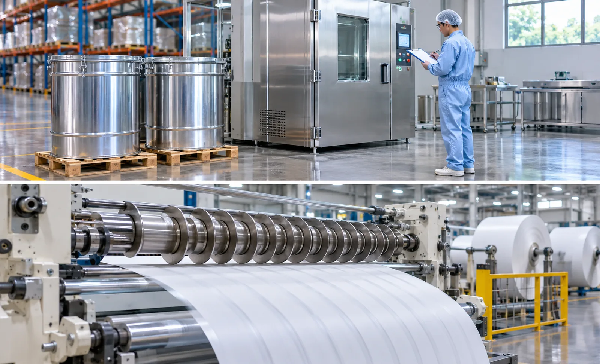
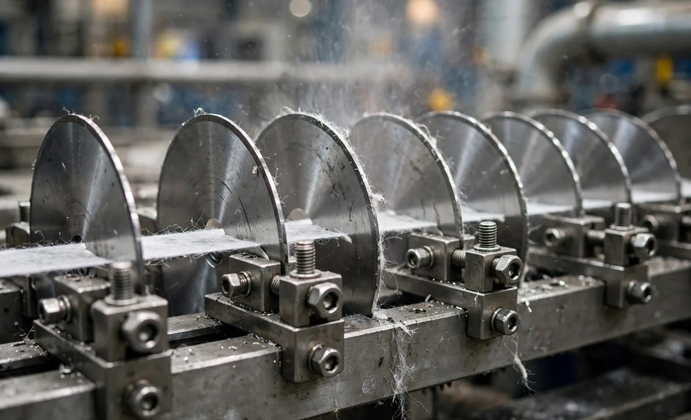

Published November 21, 2026 | By HDPTH Technical Editorial Team

There is a familiar pattern in converting plants: the first rolls of a shift come off the slitter rewinder clean, the operators sign the quality sheet, and everything looks under control. Two or three hours later the edges start to fuzz, a trim width creeps out of tolerance, or a burr appears on lanes that were perfect at start-up. Settings are checked and found unchanged. Blades are swapped, and the problem improves for an hour before returning. The explanation, in a large share of these cases, is not the blade and not the operator — it is thermal drift in the slitting section: the machine’s own knife holders, carrier beam and frame quietly changing shape as they warm from start-up temperature to steady operating temperature. This guide explains where that heat comes from, how much it can move a cutting edge, what buyers should look for in the machine design, and how to write thermal stability into the acceptance test so the behaviour is demonstrated before the machine ships.
What thermal drift is and why slitting is uniquely exposed
A slitting station is a chain of metal parts holding a blade edge in a defined relationship to the web and to the mating blade: frame, carrier beam, holder body, clamp, arbor and knife. Every one of those links expands as its temperature rises, and the expansions add up along the chain. Steel grows by roughly 11.5 micrometres per metre per degree Celsius; aluminium alloys used in beams and holders grow roughly twice as fast per metre. A knife holder arm that warms by fifteen degrees grows by tens of micrometres, and a beam that warms unevenly tilts as well as grows, rotating the knives it carries. None of this is visible to the eye, and none of it changes the number displayed on the HMI as the knife position — the machine still believes it is where it was set.
Slitting is uniquely exposed because the acceptance window is narrow. Knife clearance and overlap tolerances for thin nonwovens and films sit in the range of a few tens of micrometres, and slit width tolerances for hygienic and medical products are often tighter than the total thermal growth in the chain. What is acceptable deformation on a sawmill is fatal on a slitting beam. The second reason is time: thermal systems are slow. Components reach steady temperature hours after start-up, and they keep moving whenever speed, load or web temperature changes. A quality result captured in the first hour of a test does not guarantee the result in hour four — the machine underneath the measurement has changed.
The symptoms: how thermal drift shows up on the floor
Thermal drift has a recognizable signature, and knowing it helps buyers and troubleshooters separate heat from other causes. The first symptom is time correlation: edge quality is good at start-up and degrades after two to four hours, which is the classic warm-up curve of a machine structure. The second is speed correlation: edges degrade after a speed increase or after prolonged running at the top of the speed range, because friction heat scales with velocity and load. The third is position correlation: on multi-lane machines, lanes near drive motors, brake ends or hot incoming web edges drift differently from lanes near the centre or the frame supports — the beam is not just growing, it is bending. The fourth symptom is the reset paradox: re-touching the knife positions restores quality for a while, and the defect then returns as the new, slightly different thermal state develops.
These symptoms are routinely misdiagnosed as blade wear, which costs real money. Blades get changed hours before they are genuinely dull, consumable budgets rise, and changeover downtime increases — while the actual cause, a warm structure with moving geometry, remains untouched. Blade wear and thermal drift can of course coexist, but the distinguishing test is simple: if edge quality recovers after a stop of sufficient length for the machine to cool, and degrades again in the same time pattern after restart, the problem is thermal, not the blade.
Where the heat comes from on a slitter rewinder
The heat budget of a slitting section has four contributions, and a buyer should know which ones dominate for their product. The first and most constant is blade friction: every slit converts cutting energy into heat at the blade edge, and this heat conducts into the holder and then the beam. Higher speeds, tougher or thicker webs and more lanes all raise it. The second is the web itself. Nonwoven lines frequently run warm materials — hot-air-through bonded webs, thermal bonding calendars, drying ovens upstream — and a web arriving at thirty or fifty degrees Celsius heats everything it touches, including the knife holders and idlers in its path. The third is component heat from the machine itself: bearings in driven rolls, motors, brakes and gearboxes all reject heat into the frame, and parts of the frame warm unevenly. The fourth is ambient: a hall that is ten degrees colder at six in the morning than at two in the afternoon shifts the whole thermal baseline between shifts, which is why two shifts running the same recipe can produce measurably different edge statistics.
Two details make nonwoven slitting especially sensitive. Nonwoven webs are thick, so the contact band between blade and material is wider and friction heat per slit is higher than on film. And hygiene converting lines demand large numbers of narrow lanes — a wide machine cutting many small rolls has many knives sharing one carrier beam, so the cumulative heat input into that beam is high, and any tilt it develops is replicated across a large number of product lanes at once.

Machine design features that hold edge consistency
Thermal drift cannot be repealed — expanding metal is physics — but good machine design makes it small, symmetric and fast to correct, and this is what separates a slitting station built for eight-hour stability from one built for a one-hour demonstration. The first design lever is the carrier beam itself. A stiff beam with a short, symmetric load path to the frame grows uniformly instead of bending; beam materials and holder materials can be selected so their expansion rates partly cancel along the chain. Where a cantilevered arrangement is unavoidable, the builder should show how deflection and thermal growth were calculated, not just that the beam looks solid. The second lever is the holder. Holders with minimal clamp deflection, defined thermal expansion paths and repeatability figures for re-mounting the blade keep the chain short and predictable. The third lever is automatic knife positioning. When drift does move the geometry, the decisive question is how quickly and how accurately the machine can re-apply setpoints: a positioning system with a documented repeat accuracy lets an operator or a recipe restore the qualified window in minutes, while manual re-touching depends on skill and luck. The fourth lever is heat management at the source — airflow or coolant around the knife zone on demanding applications, shielding of the beam from hot incoming webs, and bearing arrangements that keep drive heat out of the slitting structure.
Buyers should treat these four levers as questions, not catalogues: ask each bidder what their beam and holder construction does for thermal stability, and ask for numbers — growth estimates, positioning repeatability, warm-up time to steady temperature — rather than assurances. A builder who has measured and modelled the effect will answer in micrometres and minutes; one who has not will answer in adjectives.
Operating practices: warm-up, windows and drift-aware scheduling
Even a well-designed machine needs process discipline to deliver stable edges, and the operating practices around thermal drift are inexpensive because they are organisational rather than capital. The first practice is a defined warm-up routine: bring the machine to steady temperature at a moderate speed before opening the quality windows, so that the qualified settings are applied to a thermally settled structure rather than a moving one. Ten to twenty minutes of planned warm-up routinely saves an hour of chasing edges that were never a settings problem. The second practice is drift-aware scheduling: run the most tolerance-critical products after the machine has reached steady temperature, and use the first warm-up period for less critical widths or trim runs where a few micrometres of drift do not hurt. The third practice is time-stamped quality sampling: when edge measurements are logged with the hours since start-up, patterns become visible and the plant can distinguish blade wear, thermal drift and recipe errors statistically instead of anecdotally. The fourth is recalibration discipline: when the positioning system re-applies setpoints mid-shift, the correction is logged, so the drift history of the machine accumulates as data — the same data that later justifies a retrofit, a spare-part decision or a guarantee claim.
Specifying thermal stability in the machine order
Because thermal drift is invisible in a short demonstration, it is a textbook case for specification-driven buying. Four clauses cover it. First, a material and duty clause: the products, lane counts, speeds and shift lengths the machine must hold — stating explicitly that edge quality must hold across a full production shift, not just at demonstration. Second, a design clause: the builder declares the carrier beam and holder construction, the warm-up time to steady temperature, the automatic knife positioning repeatability and any heat management features for the buyer’s specific application. Third, a test clause, which is the one with teeth: a thermal stability test in the FAT that runs the buyer’s own material at production speed for at least four hours, measuring slit width, edge quality and trim geometry at start-up, mid-test and end of test, with an agreed acceptance band between cold-machine and steady-state results. Fourth, a documentation clause: the warm-up procedure and re-positioning routine written into the operating manual and trained at commissioning, so the practice survives staff changes. A machine that passes a test of this shape has demonstrated the property the buyer actually needs — stability measured in hours, on their material, at their speed.
Knife holder behaviour never acts alone: the static side of the same subject is covered by the Knife Holder Pressure Uniformity Across Web Width: Buyer’s Guide, and the positioning side — how setpoints are held and restored — is treated in the Slitter Rewinder Knife Clearance and Overlap: Buyer’s Guide. To see how positioning systems and knife carriers are implemented in a production machine range, review the HDPTH automatic knife systems.
Need Edge Quality That Holds From First Roll to Last?
Send HDPTH your material, lane count, speed targets and shift pattern. Our application engineers will propose a slitting beam and knife positioning configuration for your product — and prove thermal stability with a multi-hour FAT run on your own material, with start-up and steady-state measurements written into the acceptance protocol.
Submit Your Project InquiryFrequently asked questions
What is knife holder thermal drift on a slitter rewinder?
Knife holder thermal drift is the slow change in knife position and geometry that happens as slitting components heat up during a shift. Friction between blades and web, bearing friction, drive heat and warm incoming webs raise the temperature of knife holders, carrier beams and frames. Because metals expand when heated, a knife that was set precisely on a cold machine moves by fractions of a millimetre as temperatures climb — enough to change knife clearance, overlap and web path geometry, and therefore enough to change slit edge quality.
How much can thermal expansion actually move a slitting knife?
Steel expands by roughly 11.5 micrometres per metre per degree Celsius, so a 300 mm knife holder arm rising 15 degrees Celsius grows by about 50 micrometres, and growth accumulates along the whole chain from frame to blade edge. For a dense film a knife moving 50 micrometres may be tolerable; for a thin nonwoven slit with tight clearance windows, or for a machine holding narrow slit widths across many lanes, that movement sits exactly in the range where burr formation, edge fuzz and slit width drift begin. The effect compounds when carriers far from the frame warm at different rates, tilting the beam.
Why does edge quality get worse after several hours of running rather than immediately?
Because the drift is thermal, it follows the machine’s temperature curve, not the operator’s settings. Machine components typically reach their steady operating temperature after two to four hours of running; that is precisely when many plants see slit edges that were clean at start-up begin to show fuzz, burrs or changed trim widths. The settings have not changed — the machine underneath them has. This is also why a defect that cannot be reproduced during a short demonstration or trial run may reappear on a full production shift.
Which machine design features reduce thermal drift in the slitting section?
The most effective features are a thermally symmetric and mechanically stiff carrier beam with a short load path to the frame, knife holders with minimal and stable clamp deflection, automatic knife positioning that can re-apply setpoints quickly rather than requiring manual re-touch, controlled warm-up routines that bring the machine to steady temperature before quality windows are opened, and where necessary airflow or coolant paths that carry blade friction heat away. For hot webs such as thermal-bonded or hot-air-through nonwovens, isolating the knife beam from the incoming web heat matters as much as managing its own friction heat.
How should a buyer verify thermal drift performance before purchase?
Ask for a thermal stability test as part of the FAT: run the machine at production speed on the buyer’s own material for at least four hours, measure slit width, edge quality and trim performance at start-up, at two hours and at four hours, and define an acceptance band for how much those measurements may move between a cold machine and a machine at steady temperature. Also require the maker to document the warm-up procedure and the automatic knife positioning accuracy that will be available for re-applying setpoints during the shift.